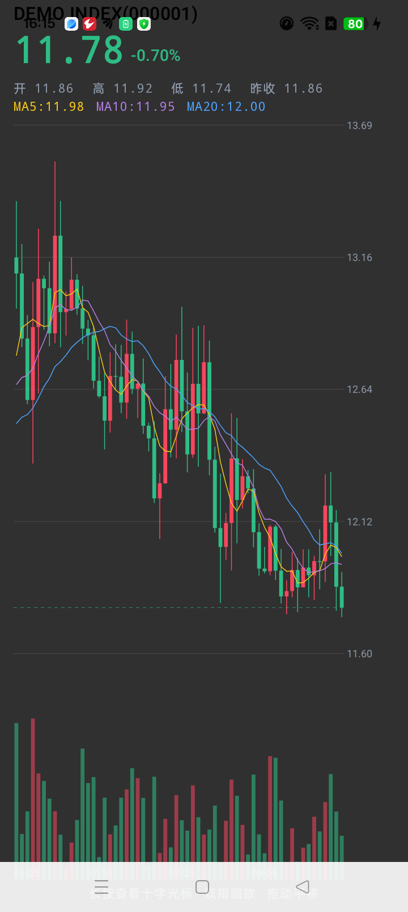
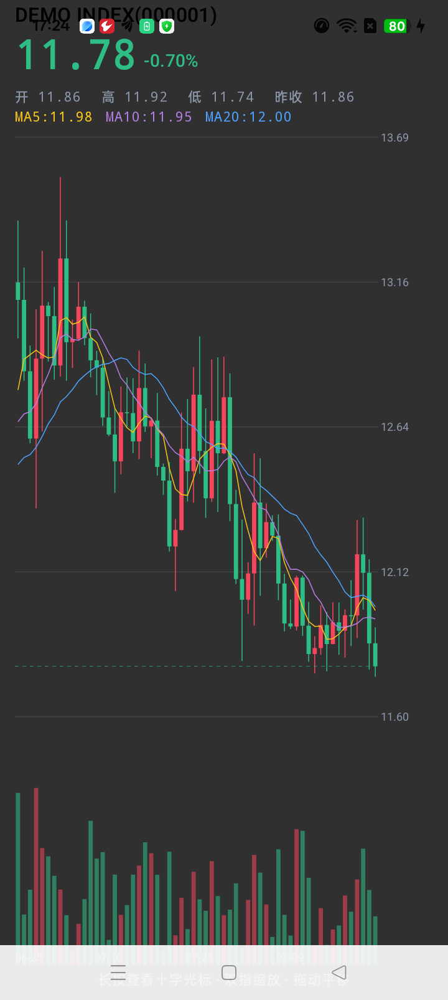

当所有 MCP 服务器都是 Python 和 TypeScript 的时候，一个 Android 开发者决定用 Kotlin 试试。
最近给 Claude Code 接 MCP 上瘾了。接多了就手痒想自己写，动手前先做了个调研，结果发现两个很有意思的空白：
第一个：搜 "kline mcp"，全 GitHub 只有 11 个仓库，星数全部低于 5。但隔壁的需求已经炸了——一个叫 Vibe-Trading 的个人交易 Agent 项目，今年 4 月才建，已经 31,000+ Star。金融类 MCP 服务器有约 400 个，但几乎全是美股 API 的包装，A股/中文市场严重缺位。
第二个：让 AI 操控安卓设备的 MCP 有一些（mobile-next/mobile-mcp 5.9k Star），但绝大多数是 TypeScript 薄封装，好几个早期项目已经弃坑，没有一个是 Kotlin 原生的——这有点讽刺，Android 的亲儿子语言，在 Android 自动化生态里缺席了。
于是我用 Kotlin + 官方 MCP Java SDK 写了两个：
两个都是真机/真实数据端到端验证过的。这篇文章记录架构决策和踩过的坑——尤其是那些搜索引擎搜不到的坑。
市面上 90% 的行情 MCP 是这样的：调 API → 返回 JSON → 完事。AI 拿到一坨蜡烛图数据，还得自己算 MA 是什么。
我把它分成了三层：
MCP 客户端 (Claude / Cursor)
│ stdio · JSON-RPC
▼
┌─────────────────── kline-mcp ───────────────────┐
│ ① 数据层 实时快照 / 日周月K线（前复权、后复权） │
│ ② 指标层 MA / EMA / MACD / KDJ / BOLL / RSI │
│ —— 全部纯函数实现，带完整单元测试 │
│ ③ 解读层 规则化趋势分析 → 自然语言结论 │
└─────────────────────────────────────────────────┘指标层是纯 Kotlin 函数，无 I/O、确定性、可单测。解读层是我最喜欢的部分——它不是把指标甩给 AI，而是先做了一层领域语义的翻译：
趋势分析：贵州茅台（600519）
· 均线结构：空头排列（价格 < MA5 < MA10 < MA20）
· 交叉信号：近 5 根K线无 MA5/MA10 交叉
· MACD 位于零轴上方，DIF < DEA（偏空）
· KDJ 超卖（J=8）
· RSI 中性（61）
· 量能持平
· 结论：多信号共振偏空（动量信号 3/3）；短线超卖，存在技术性反弹可能注意最后一句的语义设计：动量信号（均线排列、金叉死叉、MACD 方向）决定多空方向，反向信号（超买超卖）只作为风险提示。第一版我把 KDJ 超卖也计进了"看多票数"，结果在连跌的股票上输出"多空交织"——逻辑上说不通。趋势向下 + 超卖，正确的解读是"空头趋势，但注意技术性反弹"，而不是左右横跳。
这个 bug 是单测抓出来的，而抓它的单测本身还教育了我一次——
我写了个测试：macd on monotonically rising series keeps DIF above DEA（单调上涨的序列 DIF 应该大于 DEA）。挂了。
用 Python 把自己的算法模拟了一遍，发现算法完全正确：线性上涨的序列，EMA12 和 EMA26 的差值（DIF）会收敛到一个常数，而 DEA 会追平它——DIF == DEA 是教科书行为，不是 bug。我的测试前提错了。
修法：测试数据改用加速上涨（DIF 持续增大，DEA 永远追不上）。这个坑让我意识到：写技术指标的单测，测试数据本身要经得起推敲，否则你是在测一个错误的世界观。

这是整个项目最有故事的部分。数据源我选了东方财富的公开接口（量化圈人尽皆知，无需 key）。curl 测试，一切正常：
$ curl "https://push2his.eastmoney.com/api/qt/stock/kline/get?secid=0.000001&..."
{"rc":0,...,"data":{"name":"平安银行","klines":["2026-08-21,11.36,11.41,11.46,11.32,869128",...]}}程序写完，端到端一跑：
{"error":"分析失败：HTTP/1.1 header parser received no bytes"}curl 通、Java 挂？先怀疑 HTTP/2 协商问题，强制 HTTP/1.1——还是挂。加浏览器 UA——还是挂。写了个独立探针在 JVM 里挨个域名测：
maven(基线) -> 200 ✓
eastmoney无UA -> FAIL: no bytes
eastmoney浏览器UA -> FAIL: no bytes
腾讯行情 -> 200 ✓真相：东财的 CDN 在按 TLS 指纹拦截 Java 客户端，跟 UA 无关。JVM 的 TLS 握手指纹和浏览器/curl 不一样，被 WAF 识别后直接断连。
解决方案是双数据源：东财做主源，腾讯 ifzq 接口做备源（同样支持前复权）。连接失败自动切换。这个"怪癖"反而变成了仓库的工程亮点——金融数据接口本来就该有容灾。
但故事没完。备源上线后，中文名搜索还是失败。加诊断日志发现更阴的坑：东财的搜索接口对 JVM 返回的是 HTTP 200 + 空数据——不是连接失败，是应用层拦截。我的容灾只 catch 了异常，"正常返回的空结果"根本不触发切换。
// 修正前：空结果当"没搜到"正常返回
val data = ...jsonObject["Data"] ?: return emptyList()
// 修正后：空结果也是失败，触发容灾
val data = ...jsonObject["Data"]
?: throw IllegalStateException("eastmoney returned no search data")容灾的教训：失败有两种——异常和撒谎。只防前者的容灾是半成品。
腾讯系还有两个小坑顺便记录：实时行情接口按 UA 返回两种格式（浏览器 UA 有股票名字段，Java 客户端拿到的是精简版，字段整体偏移一位——修法是检测第二个字段是不是 6 位代码，是就偏移）；smartbox 搜索接口的响应带 v_hint="N"; 前置标记，真正的数据在第二个 v_hint= 里，要用 substringAfterLast。
调研竞品时发现一个痛点：大多数设备 MCP 返回的是巨大的原始 XML（uiautomator dump 的输出动辄几十 KB），Agent 的上下文窗口在燃烧。还有一个遗憾：截图存文件、返回路径——Agent 看不到图。
所以 android-mcp 的两个核心设计：
MCP 协议支持 ImageContent——截图直接以 base64 PNG 返回，多模态 Agent 真的能看见屏幕：
val png = adb.execOut(serial, "screencap", "-p") // 二进制
CallToolResult(
listOf(
TextContent("""{"size_bytes": ${png.size}}"""),
ImageContent(null, Base64.getEncoder().encodeToString(png), "image/png"),
), false, null, null,
)（注意 ImageContent 的构造器是 (annotations, data, mimeType)——第一个参数不是 data，这是我从编译错误里学的，后面细说。）

screenshot 工具"看到"的画面——100KB 真图，不是文件路径ui_describe 把 XML 压缩成一行一个可交互节点：
共 13 个可交互节点：
[1] TextView text="DEMO INDEX(000001)" @(187,24)
[2] TextView text="11.78" @(121,90)
[3] TextView text="-0.70%" @(275,98)带坐标，Agent 读完直接 tap，不需要二次解析。推荐的使用循环一句话：ui_describe → tap → screenshot 验证。
真机端到端测试，截图返回了……11 字节。cat 一看内容：
[B@328d4406经典的 Java 事故：ByteArray.toString() 的结果是对象地址。我的 AdbClient 里 binary 分支把字节流塞进了 String 类型的字段，再 toByteArray() 转回来——11 个字符的字节。
修法是给 Result 加独立的 bytes: ByteArray? 字段。修完重测：100,714 字节的真实 PNG。这种 bug 单测抓不到，端到端测试的价值就在这——它测的是真实现场。
用 monkey -p com.xxx 启动应用，包不存在时它也可能返回 exit 0。我在自动化脚本里吃过这个亏：启动命令"成功"，前台却还是桌面。修法是校验输出里必须有 Events injected：
val out = adb.shell(d, "monkey", "-p", pkg, ...)
if (!out.contains("Events injected")) throw ToolError("monkey 启动失败")官方 MCP Java SDK 2.x 的文档还比较分散，这是编译通过 + 真机验证过的用法：
// build.gradle.kts（Kotlin JVM, JDK 17+）
implementation("io.modelcontextprotocol.sdk:mcp:2.0.1")
// 聚合模块，传递引入 mcp-core + jackson3 绑定val mapper = JacksonMcpJsonMapper(JsonMapper.builder().build())
McpServer.sync(StdioServerTransportProvider(mapper))
.serverInfo("my-mcp", "0.1.0")
.instructions("一句话描述能力——Agent 靠它决定何时调用")
.tools(*MyTools.all().toTypedArray())
.build()
// 不要加 latch/await：stdio 传输自己保活，stdin EOF 自然退出JsonMapper 是 Jackson 3 的 tools.jackson.databind.json.JsonMapper——不是老的 com.fasterxml 包名。
Tool 是 7 参 record：(name, description, title, inputSchema, outputSchema, annotations, meta)，不用 builder 时中间参数传 null。Map<String, Any>。我在 Kotlin 里顺手写了 buildJsonObject——两套 JSON 体系混用，编译器直接报 JsonElement was expected。schema 用纯 Kotlin buildMap 写。ImageContent(annotations, data, mimeType) 第一个参数不是数据，是 annotations。stdio 就是行分隔的 JSON-RPC，管道一怼就能测：
{
printf '{"jsonrpc":"2.0","id":1,"method":"initialize","params":{"protocolVersion":"2025-06-18","capabilities":{},"clientInfo":{"name":"t","version":"1"}}}\n'
printf '{"jsonrpc":"2.0","method":"notifications/initialized"}\n'
printf '{"jsonrpc":"2.0","id":2,"method":"tools/call","params":{"name":"analyze_trend","arguments":{"code":"000001"}}}\n'
sleep 20
} | build/install/my-mcp/bin/my-mcp两个细节：每个请求用不同的 id（重复 id 可能被去重）；macOS 没有 timeout 命令，用 sleep + EOF 控制时长。
SDK 文档没写清楚的地方，我直接解包看字节码：
curl -s -o /tmp/mcp-core.jar https://repo.maven.apache.org/maven2/io/modelcontextprotocol/sdk/mcp-core/2.0.1/mcp-core-2.0.1.jar
unzip -q mcp-core.jar "io/modelcontextprotocol/spec/McpSchema*.class" -d mcpjar
javap -classpath mcpjar 'io.modelcontextprotocol.spec.McpSchema$ImageContent'不猜 API，看它的真身。这个习惯帮我省了至少三轮"编译-报错-再猜"的循环。
写完这两个项目，我把过程中可复用的知识抽成了 5 个 Agent Skills，放在 android-agent-skills：
android-build-doctor：AGP 9 移除 kotlin-android 插件、compileSdk 依赖链、从 Maven metadata 查真实版本mcp-kotlin-builder：上面第三节的内容，经编译验证的 SDK 2.x 指南crash-triage-adb：logcat 崩溃分诊compose-perf-review：Compose 重组性能审查kotlin-k2-upgrade：K2 升级清单技能的本质是"踩过坑的人写的提示词"。搬运文档的 skill 一抓一大把，从真实事故里长出来的才有壁垒。
最后说一句感受：MCP 生态现在像 2010 年的 App Store，接口标准已经统一，但垂直场景的好工具还远远不够。Python/TS 不是唯一解——你的主语言 + 你的领域知识，可能就是下一个空白。
数据来自公开接口，仅供研究学习，不构成投资建议。